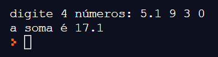

Material de apoio para a disciplina Linguagem de Programação da UACSA/UFRPE
Produzido pelo prof. João Pimentel
Às vezes a gente tem uma string com vários valores, e queremos fazer alguma coisa com esses valores. Como faz? Aí é que entra a função split! Mas primeiro vamos ver um exemplo em que isso acontece.
Suponha que você quer que o usuário digite 4 números, para depois calcular o somatório. Poderia ser assim:
Nada de extraordinário, certo?
Mas agora que sou um(a) super-programador(a), quero facilitar a vida do(a) usuário(a): vou deixar a pessoa escrever os 4 números de uma vez só, separados por um espaço. Assim, ó:
Para separar os quatro números e poder fazer a conta, usamos a função split.
A função split separa um texto em vária partes, separando onde tem um espaço e guardando todas as partes em uma lista.
Nesse exemplo o resultado é uma lista contendo 3 strings: 'oi', 'blz' e 'tchau'. Se eu quiser usar o a segunda palavra, é só pegar o segundo elemento da lista, então print(separado[1]) vai imprimir a palavra 'blz', blz?
vai dar erro, por que a função split vai tentar separar nos espaços, mas nesse texto não tem espaços. Nada tema, podemos mandar o split separar pela vírgula, assim: texto.split(',')
Isso é muito prático para salvar e carregar dados de um arquivo - por exemplo, o save de um jogo. Existe até um formato de arquivo, muito usado, chamado CSV, da sigla em inglês para "valores separados por vírgulas".
Naquele nosso primeiro exemplo usamos números, mas uma coisa importante sobre números é que strings não são números. Em
Para conseguirmos fazer a conta vamos transformar cada uma das strings em números, usando a função float(). O programa completo fica assim:
Quando estudamos mais acabamos aprendendo funções que facilitam a nossa vida, e uma delas é a função map. Podemos usá-la para fazer a conversão de uma lista de strings para uma lista de números de uma forma mais enxuta, mas que acaba sendo mais complicada para quem não conhece bem a função map ainda. O nosso programa pode ficar assim: